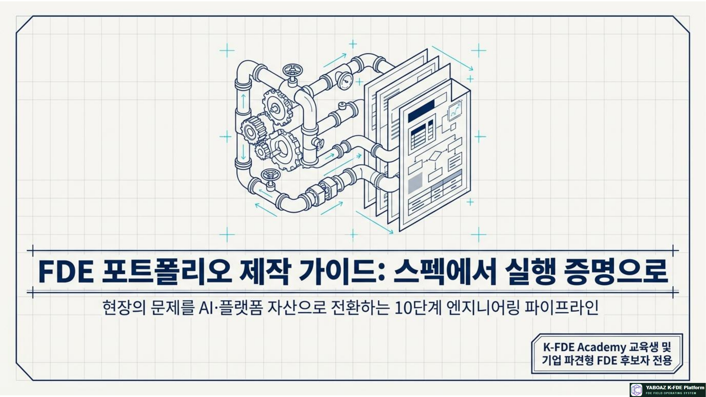
1. FDE 포트폴리오의 의미
FDE 포트폴리오는 이력서나 프로젝트 파일 모음이 아닙니다. “내가 무엇을 배웠는가”보다 “어떤 현장 문제를 어떤 구조로 바꾸고 어떤 결과를 검증했는가”를 증명하는 산출물 기반 기록입니다.
현장 행동·병목·우회 업무를 관찰
Evidence·2A4·온톨로지로 변환
판단·Agent·Human Gate·MVP 구현
KPI·Bootcamp·자산화로 검증
이 지원자가 현장의 모호한 문제를 구조화할 수 있는가, AI를 안전하게 실행할 수 있는가, 사용자와 성과를 검증할 수 있는가, 팀이 재사용할 자산을 남길 수 있는가를 봅니다.
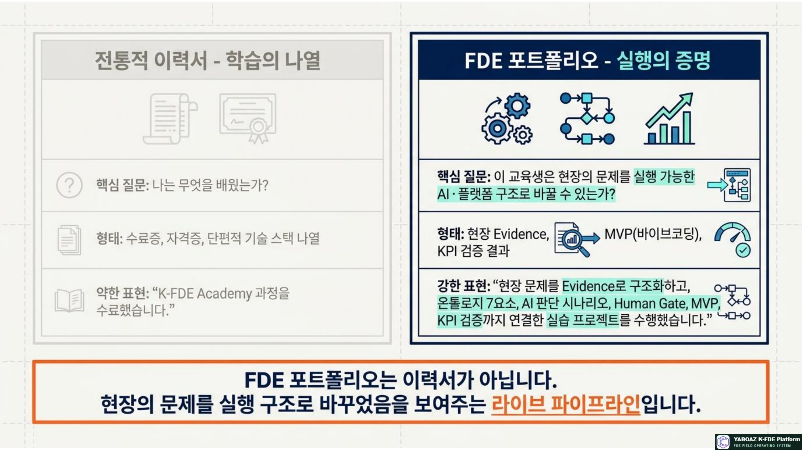
2. 포트폴리오 10개 파트
| 파트 | 내용 | 핵심 질문 | 대표 산출물 |
|---|---|---|---|
| 1 | 자기소개·FDE 정체성 | 나는 어떤 산업과 문제에 강한가? | 프로필·핵심 강점 |
| 2 | 프로젝트 개요 | 누구의 어떤 문제를 해결했는가? | 문제·사용자·목표·범위 |
| 3 | Evidence·현장 탐색 | 문제가 실제로 존재한다는 근거는? | Evidence 카드·관찰표 |
| 4 | 2A4 문제정의 | 증상과 원인을 어떻게 구분했는가? | Actual·Cause·Ask·Analyze·Align·Act |
| 5 | 온톨로지 7요소 | AI가 이해해야 할 현장 구조는? | 객체·관계·상태·이벤트·규칙·행동 |
| 6 | AI 판단·Human Gate | AI는 무엇을 제안하고 사람은 어디서 승인하는가? | 판단 카드·승인 조건 |
| 7 | AI Agent | Agent의 역할·권한·금지 행동은? | Agent 사양서 |
| 8 | 워크플로·화면·데이터 | 설계가 실제 업무 흐름으로 작동하는가? | 상태표·화면·모델·API |
| 9 | MVP·Bootcamp KPI | 기존 방식보다 무엇이 얼마나 좋아졌는가? | MVP·테스트·성과표 |
| 10 | 자산화·성장 계획 | 무엇을 다시 쓰고 다음에 무엇을 배울 것인가? | 자산 카드·로드맵 |
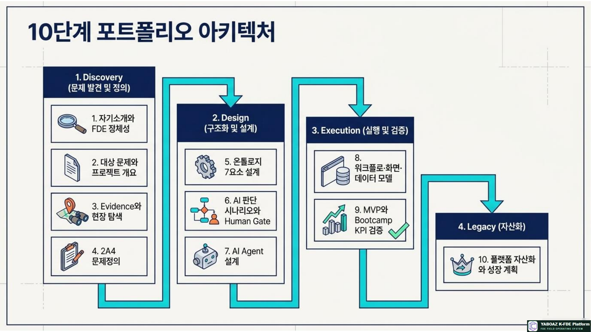
3. 전체 스토리 구조
페이지마다 새로운 이야기를 시작하지 말고, 하나의 문제 해결 여정으로 연결합니다. 모든 핵심 주장에는 Evidence·규칙·로그·KPI의 근거를 붙입니다.
| 서술 원칙 | 약한 표현 | 강한 표현 |
|---|---|---|
| 문제 | 업무가 불편했다 | 센서 알림 후 실제 구역 확인에 평균 3분 40초가 걸렸다 |
| AI | AI로 자동화했다 | 복수 센서 감지와 구역 상태를 근거로 위험도를 추천하고 관리자가 승인 |
| 성과 | 효율이 좋아졌다 | 판단시간 8분→2분, 동일 시나리오에서 75% 단축 |
| 역할 | 프로젝트에 참여했다 | Evidence 수집·온톨로지·Agent 사양서·승인 화면을 담당 |
| 자산 | 재사용 가능하다 | 센서-구역 공통 코어와 고객별 매핑 규칙을 분리해 Level 3 자산 등록 |
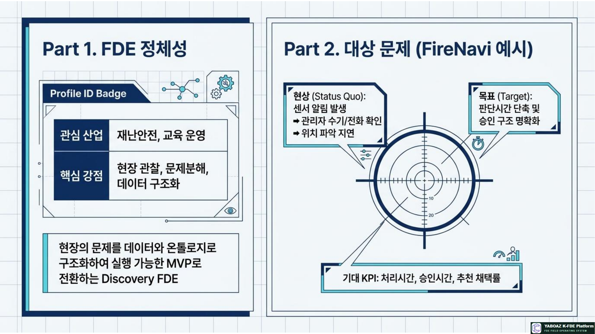
4. 자기소개와 FDE 정체성
| 항목 | 작성 내용 | 작성 팁 |
|---|---|---|
| 관심 산업 | 재난안전·제조·병원·금융·교육 등 | 경험과 포트폴리오 사례로 뒷받침 |
| 핵심 강점 | 관찰·문제분해·데이터 구조화·바이브코딩 | 강점마다 산출물 증거 연결 |
| FDE 정의 | 현장 문제를 AI 실행 구조로 바꾸는 역할 | 자신의 언어로 한 문장 작성 |
| 대표 프로젝트 | FireNavi·AI-Men·개인·기업 프로젝트 | 문제·본인 역할·성과를 한 줄로 |
| 희망 역할 | Discovery·Ontology·MVP·Validation FDE | 현재 단계와 다음 단계 구분 |
소개문 예시
저는 현장의 문제를 데이터와 온톨로지로 구조화하고 AI Agent와 워크플로를 통해 실행 가능한 MVP로 전환하는 FDE를 목표로 합니다. 재난안전 분야 FireNavi 프로젝트에서 센서 알림·위험 판단·관리자 승인·대피 안내를 하나의 실행 구조로 설계했습니다.
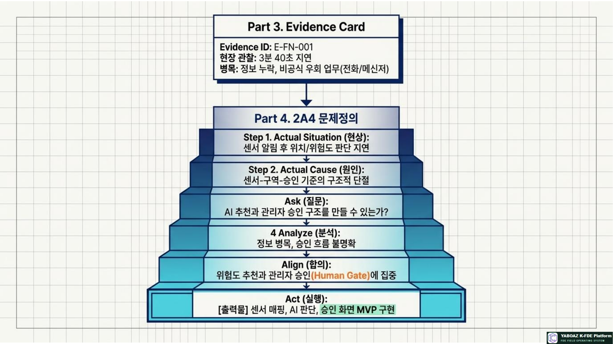
5. 문제·Evidence·2A4 구성
| 구성 | 포함 내용 | 평가자가 보는 증거 |
|---|---|---|
| 프로젝트 개요 | 산업·사용자·기존 방식·개선 목표 | 범위가 과도하게 넓지 않은가 |
| Evidence | ID·출처·관찰 사실·시점·신뢰도·보안 등급 | 의견과 사실이 분리되었는가 |
| 공식 vs 실제 | 매뉴얼과 실제 행동의 차이 | 현장성을 발견했는가 |
| 2A4 | Actual Situation·Cause·Ask·Analyze·Align·Act | 원인과 실행안이 연결되는가 |
| 사용자·KPI | 누가 행동하고 무엇을 개선하는가 | 문제가 측정 가능한가 |
Evidence 카드 예시 · E-FN-001
출처: 현장 관찰 · 사실: 센서 알림 후 관리자가 실제 구역을 전화로 확인 · 소요: 3분 40초 · 신호: 센서 ID와 공간 정보 연결 부족 · 연결 문제: 위험 판단 지연 · 보안: 내부 제한
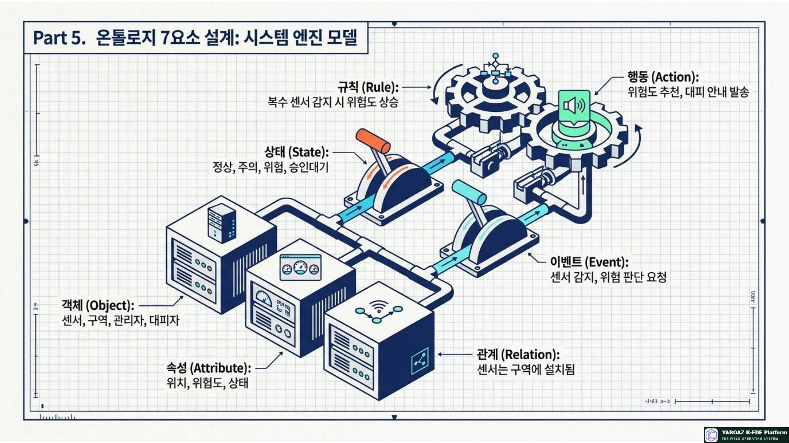
6. 온톨로지·AI·Agent 설계
| 영역 | 포트폴리오에 보여줄 것 | 검토 질문 |
|---|---|---|
| 온톨로지 7요소 | 센서·구역·관리자·경로·알림, 속성·관계·상태·이벤트·규칙·행동 | 객체가 판단·행동과 연결되는가? |
| AI 판단 | 판단 질문·입력·기준·출력·신뢰도·금지 판단 | AI가 할 일과 하지 않을 일이 명확한가? |
| Human Gate | 승인자·승인 조건·근거·반려·보류·기록 | 고위험 행동이 사람 승인 아래 있는가? |
| Agent | 목적·역할·데이터·도구·권한·실패 처리·KPI | 챗봇 설명을 넘어 운영 역할이 있는가? |
| 보안·감사 | 데이터 등급·출처·로그·익명화 | 책임과 재현이 가능한가? |
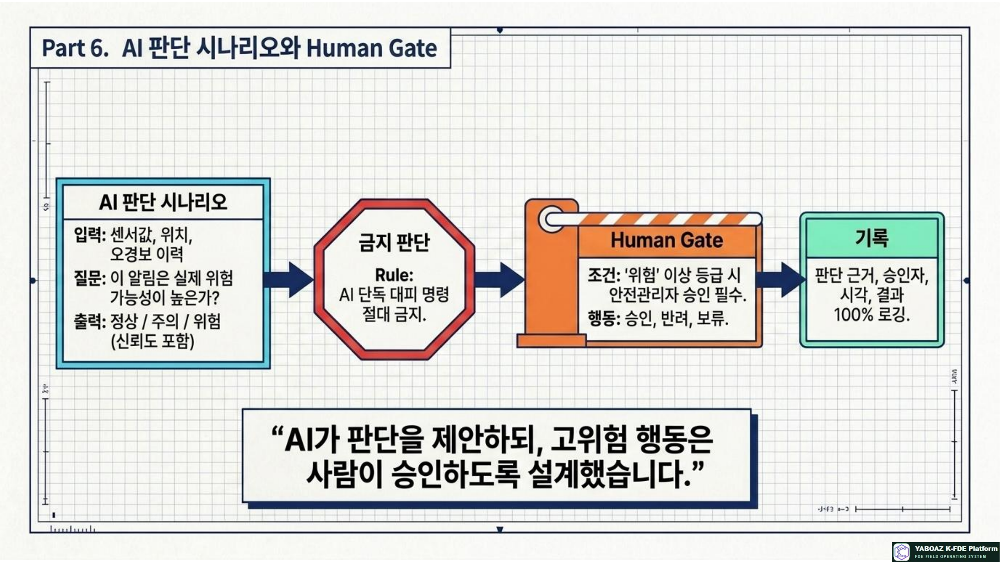
7. 워크플로·MVP·KPI 검증
| 항목 | 예시 | 반드시 설명할 내용 |
|---|---|---|
| 화면 | 이벤트 대시보드·AI 추천·승인·로그·KPI | 사용자가 어떤 순서로 행동하는가 |
| 데이터 | Event·Sensor·Location·AIJudgment·Approval | 온톨로지 객체와 어떻게 매핑되는가 |
| 권한 | 조회·추천·승인·실행·감사 | AI와 사람이 어디까지 가능한가 |
| 테스트 | 단일 센서·복수 센서·위치 누락 | 정상·예외·실패를 검증했는가 |
| KPI | 위치 확인·판단·승인 시간, 채택률, 로그 완전성 | 기존 기준선과 비교했는가 |
| 자산 | 센서-구역 온톨로지·승인 화면·KPI 모델 | 다른 프로젝트에 어떻게 재사용하는가 |
FireNavi 결과 예시
위치 확인 4분→45초, 위험도 판단 8분→2분, 승인 5분→2분 30초, AI 추천 채택률 80%, 로그 완전성 100%. 표본 수와 테스트 시나리오, 본인 기여 범위를 함께 표시합니다.
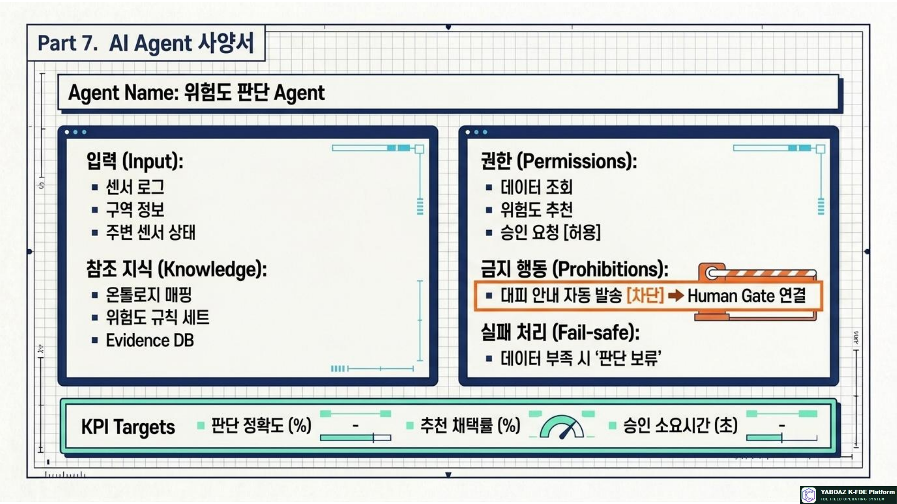
8. 포트폴리오 형식과 분량
| 형식 | 용도 | 권장 분량 | 구성 포인트 |
|---|---|---|---|
| 요약 PDF | 지원·첫 미팅·링크 공유 | 5~7페이지 | 문제·역할·성과·대표 구조 |
| 표준 PDF | 취업·재취업·기업 매칭 | 15~20페이지 | 13단계 핵심 산출물 |
| 심사용 PDF | 자격·심사·프로젝트 평가 | 30페이지 내외 | 근거·버전·예외·역할 상세 |
| 웹 포트폴리오 | 온라인 제출·지속 업데이트 | 프로젝트별 상세 | 대시보드·MVP 링크·시각화 |
| 발표 슬라이드 | 면접·발표·Bootcamp | 10~12장 | 5분 문제 해결 스토리 |
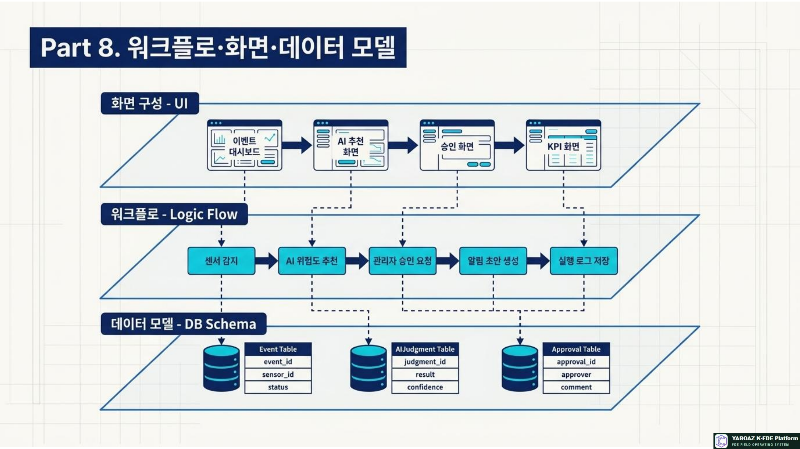
9. 면접·발표 구조
| 시간 | 발표 내용 | 핵심 문장 |
|---|---|---|
| 30초 | 문제·사용자·목표 | 누구의 어떤 지연·오류를 줄였는가 |
| 1분 | Evidence·원인 | 어떤 관찰과 데이터로 문제를 확인했는가 |
| 1분 | 온톨로지·AI 판단 | 무엇을 구조화하고 AI가 무엇을 추천하는가 |
| 1분 | MVP·Human Gate | 사람은 어디서 승인하고 시스템은 무엇을 기록하는가 |
| 1분 | KPI·검증 | 기존 대비 무엇이 얼마나 개선되었는가 |
| 30초 | 역할·성장 | 내가 맡은 부분과 다음 프로젝트 기여는 무엇인가 |
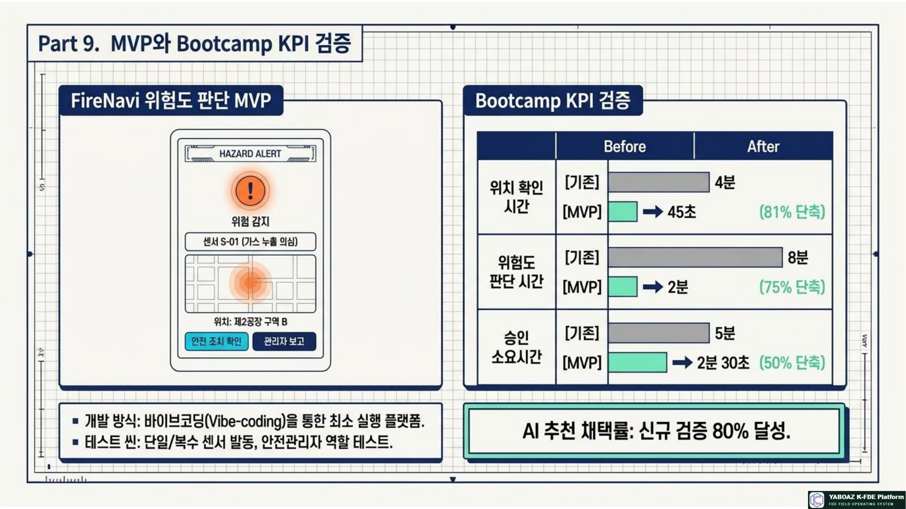
10. 포트폴리오 평가 기준
| 평가 항목 | 배점 | 우수 기준 |
|---|---|---|
| 문제정의 | 10 | 원인·범위·사용자·KPI가 명확 |
| Evidence | 10 | 출처·사실·신뢰도·보안 등급이 있음 |
| 현장 탐색 | 10 | 공식과 실제 프로세스 차이 발견 |
| 온톨로지 | 15 | 7요소가 AI 판단·행동과 연결 |
| AI·Human Gate | 15 | 입력·근거·권한·승인·금지 명확 |
| Agent | 10 | 역할·도구·실패·로그·KPI 포함 |
| 워크플로·MVP | 10 | 화면·데이터·상태·실행이 작동 |
| KPI 검증 | 5 | 기준선·개선율·한계 제시 |
| 자산화·성장 | 5 | 재사용 조건과 다음 목표 명확 |
| 합계 | 100 |
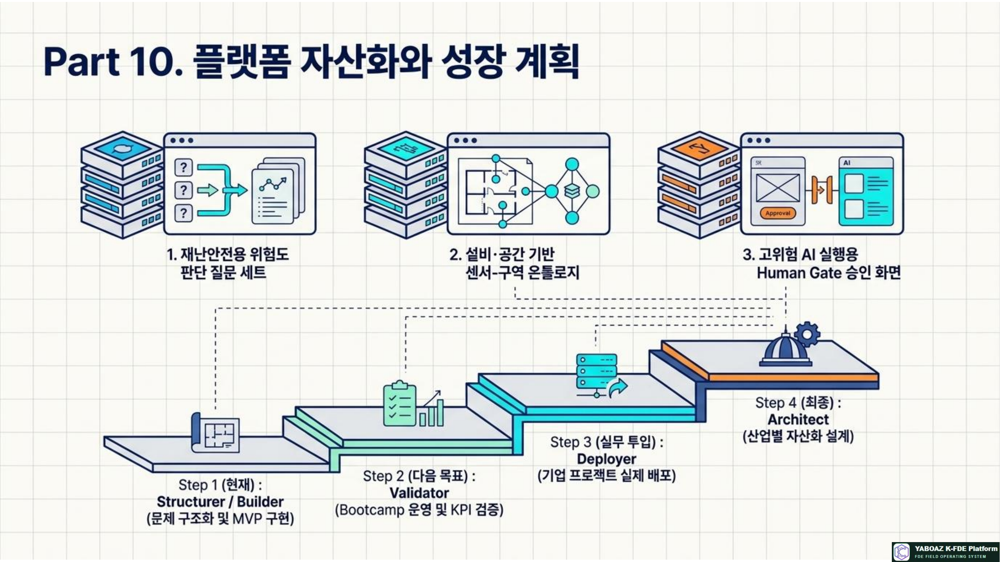
11. 취업·재취업용 표현
| 약한 표현 | 강한 표현 |
|---|---|
| K-FDE Academy 과정을 수료했습니다. | 현장 문제를 Evidence로 구조화하고 온톨로지·AI 판단·Human Gate·MVP·KPI 검증까지 수행했습니다. |
| AI 자동화 프로젝트에 참여했습니다. | 센서·구역 객체를 모델링하고 위험도 추천 Agent와 관리자 승인 워크플로를 설계했습니다. |
| 프로토타입을 만들었습니다. | 사용자가 이벤트를 확인하고 AI 추천을 승인하며 실행 로그와 KPI를 확인하는 MVP를 구현했습니다. |
| 협업을 했습니다. | 안전관리자 인터뷰와 Evidence를 담당하고, 개발자와 API·권한·예외 조건을 합의했습니다. |
이력서 한 줄 요약
FDE 기반 문제정의·Evidence 관리·온톨로지 설계·AI Agent 사양서·Human Gate 워크플로·바이브코딩 MVP·Bootcamp KPI 검증 포트폴리오 보유
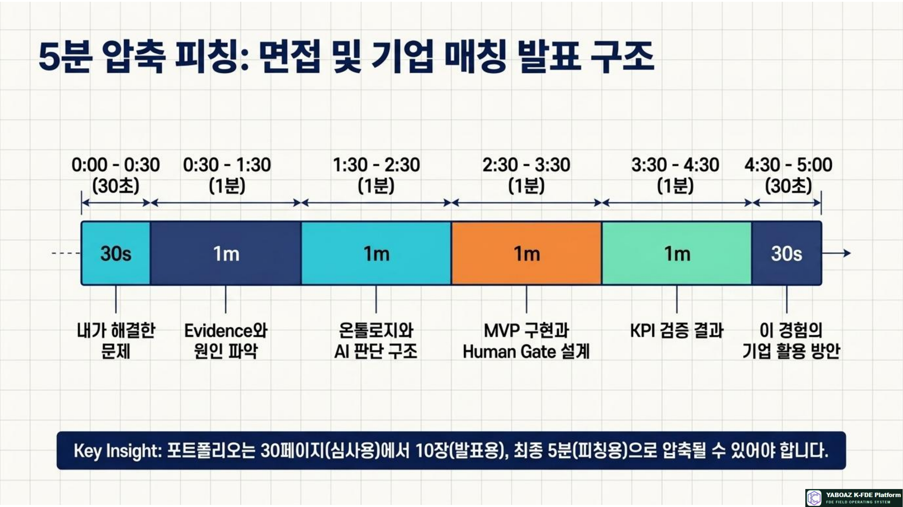
12. 자격·현장 투입 연결
| 포트폴리오 상태 | 권장 인증·투입 수준 | 필수 보완 |
|---|---|---|
| 개념·사례만 있음 | FDE Associate·교육 실습 | 현장 Evidence와 산출물 추가 |
| Evidence·2A4·Discovery | FDE Practitioner·관찰 보조 | 온톨로지와 판단 설계 |
| 온톨로지·AI·워크플로 | FDE Professional·구조화 보조 | 작동 MVP와 Human Gate |
| MVP·KPI·Bootcamp | FDE Senior·검증·고객 프로젝트 | 운영·변화관리·자산화 |
| 복수 프로젝트·표준 자산 | FDE Architect·총괄·심사 | 교육·품질·산업 확장 |
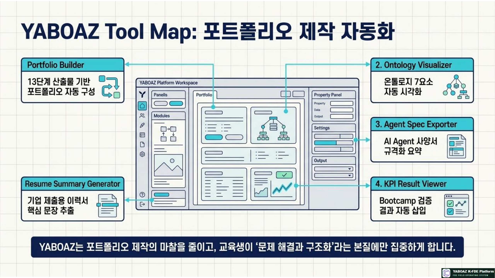
13. 제작 체크리스트
교육생을 단순 수료자가 아니라, 기업과 기관이 산출물과 실행 결과로 평가할 수 있는 FDE 인재로 제시하는 것입니다. 포트폴리오는 학습의 끝이 아니라 현장 투입과 다음 프로젝트를 여는 실행 자산입니다.
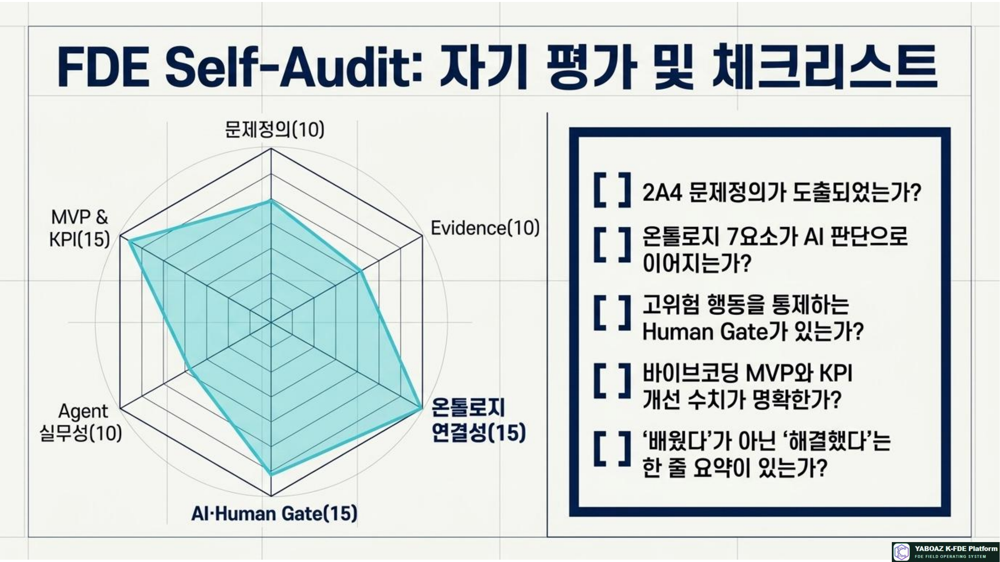
14. 교육 실습 구성
| 시간 | 실습 내용 | 산출물 |
|---|---|---|
| 30분 | 포트폴리오 구조와 평가자 관점 이해 | 목차·평가 기준 |
| 40분 | 자기소개·FDE 정체성 작성 | 프로필 문장 |
| 50분 | 문제·Evidence·2A4 정리 | 문제 섹션 |
| 50분 | 온톨로지·AI 판단·Agent 요약 | 구조 섹션 |
| 50분 | 워크플로·MVP·KPI 구성 | 실행·검증 섹션 |
| 40분 | 자산화·성장 계획 | 자산·로드맵 |
| 40분 | 발표용 10장 슬라이드 제작 | 발표 덱 |
| 60분 | 발표·심사·피드백 | 개선 백로그 |
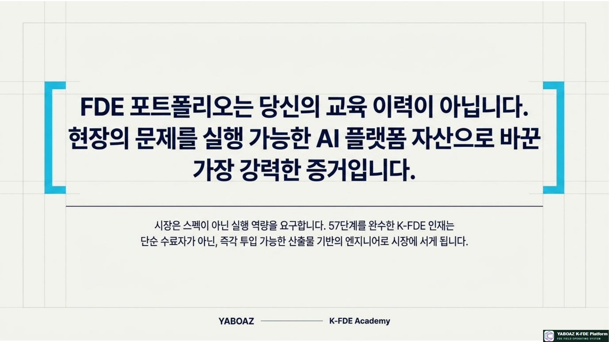